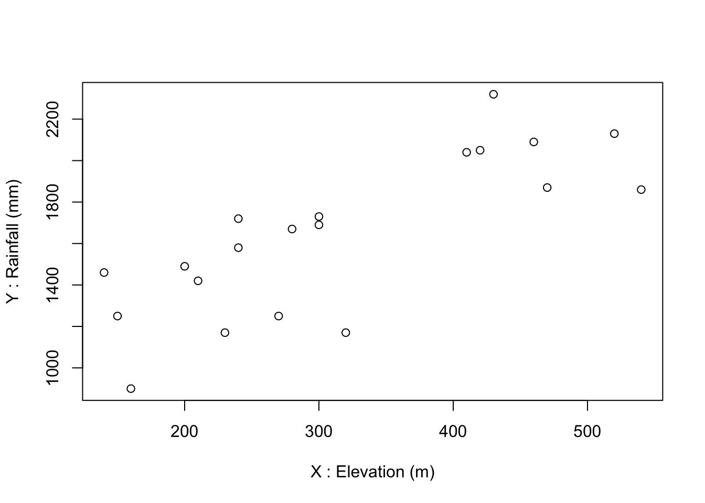
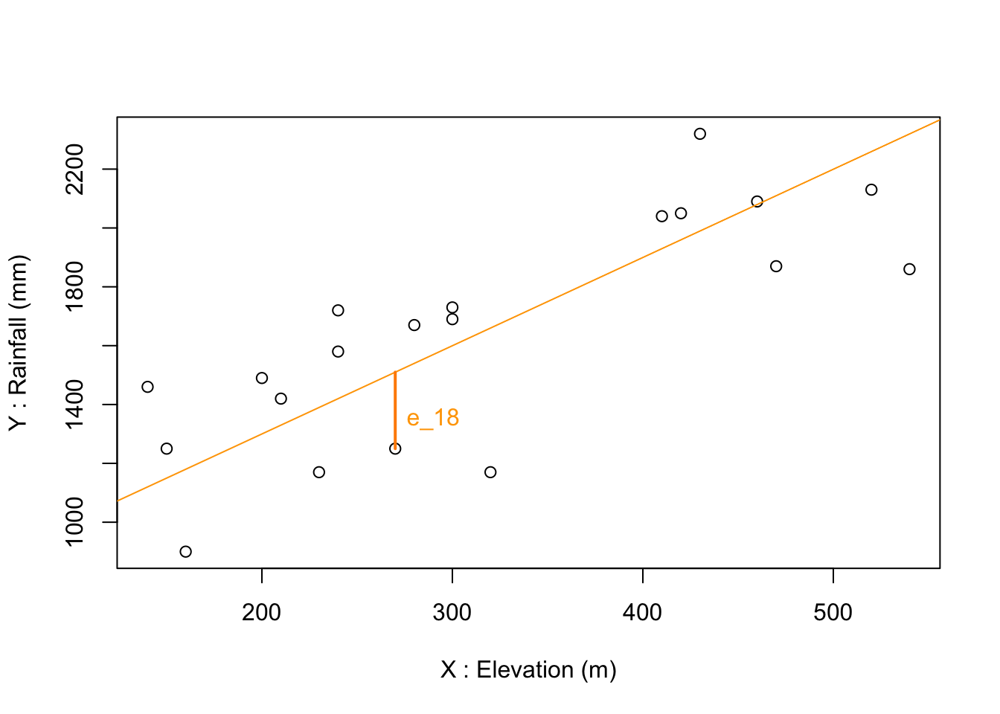
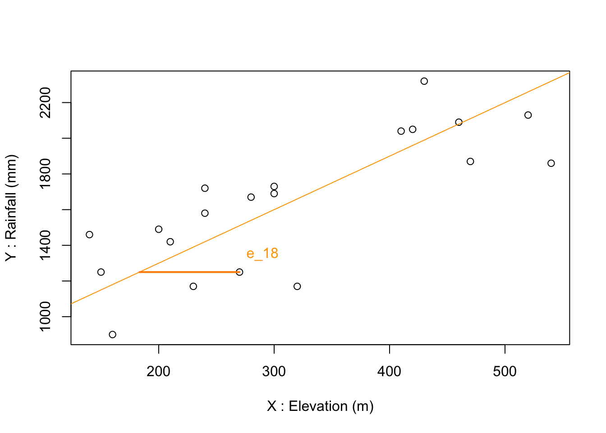
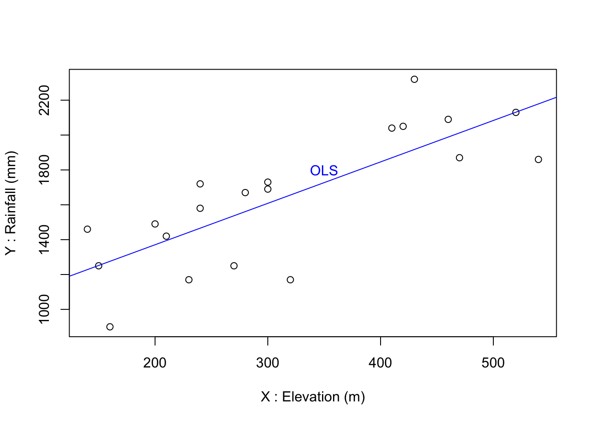
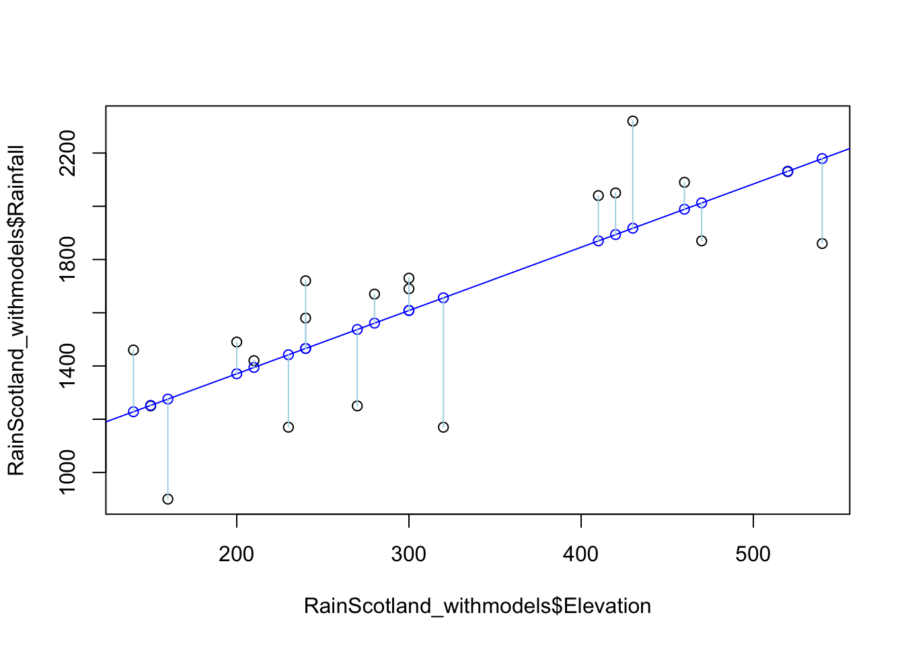

RainScotland<-read.csv("data/Ferguson/RainScotland.csv")27 Regression
27.1 Example
To illustrate the functioning of a regression model, we use a dataset from Ferguson (n.d.) (table 1 and 2) representing average precipitation and elevation across southern Scotland (between national grid lines 600 and 601 km N).
Our first variable of interest is Rainfall in mm/yr and the second is Elevation in m above sea level.
Always start with a scatterplot when possible:
plot(x=RainScotland$Elevation, y=RainScotland$Rainfall,
xlab="X : Elevation (m)", ylab="Y : Rainfall (mm)")
We can see and measure that the two variables correlate positively and significantly:
cor(RainScotland$Elevation, RainScotland$Rainfall)
#> [1] 0.7839175
cor.test(RainScotland$Elevation, RainScotland$Rainfall)
#>
#> Pearson's product-moment correlation
#>
#> data: RainScotland$Elevation and RainScotland$Rainfall
#> t = 5.3568, df = 18, p-value = 4.317e-05
#> alternative hypothesis: true correlation is not equal to 0
#> 95 percent confidence interval:
#> 0.5227325 0.9105639
#> sample estimates:
#> cor
#> 0.783917527.2 Simple regression – principle
What is the straight line that best fits this plot ?
Let’s draw one line and define the residual, \(e_i\), as the vertical difference between the ‘best line’ and the point \((X_i, Y_i)\).
As you know a straight line is entirely defined by its slope (\(b\)) and its intercept (\(a\)). With \(a=700\) and \(b=3\) we have quite a good proxy:
plot(x=RainScotland$Elevation, y=RainScotland$Rainfall,
xlab="X : Elevation (m)", ylab="Y : Rainfall (mm)")
l_a=700
l_b=3
abline(a=l_a,b=l_b, col="orange")
text(x=RainScotland$Elevation[18]+20,y=RainScotland$Rainfall[18]+100,labels = "e_18", col="orange")
segments(x0=RainScotland$Elevation[18],y0=RainScotland$Rainfall[18],
x1=RainScotland$Elevation[18], y1=l_a+l_b*RainScotland$Elevation[18], col="darkorange",lwd=2)
There could be many lines to approximate the graph and for which residuals can be computed.
Rather that testing an infinity of line equations, we choose the line that minimises the sum of the square residuals. It is the least square line. The method is named the Ordinary Least Square estimation method (OLS)
Beware! The result would differ if differences would be measured vertically!
plot(x=RainScotland$Elevation, y=RainScotland$Rainfall,
xlab="X : Elevation (m)", ylab="Y : Rainfall (mm)")
l_a=700
l_b=3
abline(a=l_a,b=l_b, col="orange")
text(x=RainScotland$Elevation[18]+20,y=RainScotland$Rainfall[18]+100,labels = "e_18", col="orange")
segments(x0=RainScotland$Elevation[18],y0=RainScotland$Rainfall[18],
x1=(RainScotland$Rainfall[18]-l_a)/l_b, y1=RainScotland$Rainfall[18], col="darkorange",lwd=2)
As a result, the respective role of \(X\) and \(Y\) is not the same in regression (compare to correlation)!!
Regression is not symetrical: - \(Y\) is the variable to be explained, the dependent variable - \(X\) is the independent variable
27.3 Simple regression – OLS estimates
How do we define the OLS line? How do we find its defining parameters \(a\) and \(b\)?
We have the set of points \((X_i,Y_i)\), \(i=1,…,n\).
Any linear function is of the form \[Y = a + bX\], where the value for \(a\) and \(b\) must be found.
The residual in each \(i\) is thus defined by \[e_i = Y_i - a - bX_i\]
And the OLS criteria writes as
\[\min_{a,b} = \sum_{i=1}^n e_i^2 = \sum_{i=1}^n (Y_i - a - bX_i)^2\]
Its solution is: \[a = \bar{Y}-b\bar{X}\] The intercept is completely determined by the estimated slope \(b\) and the two sample means.
\[b = \dfrac{\sum_{i=1}^n (Y_i - \bar{Y})(X_i - \bar{X})}{\sum_{i=1}^n (X_i - \bar{X})^2} = \dfrac{\sum_{i=1}^n y_i x_i}{\sum_{i=1}^n x_i^2}\] The denominator of \(b\) should ring a bell… it is again the sum of the product of the deviations to the mean in \(X\) and \(Y\), and is thus increasing when the two changes go along in the same direction. Conversely to the correlation coefficient, however, it is made relative to squared changes in \(X\) not to a product of standard deviations. It has therefore units and is expressed in units of \(Y\) per units of \(X\) (i.e in our case \(b\) mm of precipitation for each m of elevation)
The regression line (i.e. estimated \(Y\)) is denoted by: \[\hat{Y_i} = a + b X_i\] and thus the residual is \[e_i = Y_i - \hat{Y_i}\]
In R, we use the lm()function to obtain \(a\) and \(b\)
lm(Rainfall~Elevation,data=RainScotland)
#>
#> Call:
#> lm(formula = Rainfall ~ Elevation, data = RainScotland)
#>
#> Coefficients:
#> (Intercept) Elevation
#> 895.322 2.377We can store this into an object for later and to retrieve the parameters of the line:
OLS1<-lm(Rainfall~Elevation,data=RainScotland)
OLS1$coefficients
#> (Intercept) Elevation
#> 895.322341 2.377353Where we see the best fit using the OLS estimator leads to the following equation: \[\hat{Y}= \text{Rainfall} (mm) = 895 (mm) + 2.377 \text{ Elevation} (m)\]
Interpretation:
Every increase of 1m in elevation leads to an additional 2.377 mm of water
At sea level, i.e. elevation 0, rainfall is expected to be 895 mm
If we observe an elevation of 350 m, we can expect a rainfall of \(895 + 2.377 * 350= 1727 mm\)
We can represent that equation on the graph by using directly its paramaters:
plot(x=RainScotland$Elevation, y=RainScotland$Rainfall,
xlab="X : Elevation (m)", ylab="Y : Rainfall (mm)")
OLS_a=OLS1$coefficients[1]
OLS_b=OLS1$coefficients[2]
abline(a=OLS_a,b=OLS_b, col="blue")
text(x=350,y=1800,"OLS", col="blue")
27.4 Quality of the fit/prediction?
Use the following property: the mean prediction (estimation) equals the observed mean: \(\bar{Y_i} = \dfrac{1}{n} \sum_{i=1}^n \hat{Y_i}\)
Define the deviations of the estimated values to the mean: \(\hat{y_i} = \hat{Y_i} - \bar{Y}\)
Then the quality of the fit is
\[R^2 = \dfrac{\sum_{i=1}^n \hat{y_i^2}}{\sum_{i=1}^n y_i^2} = \dfrac{\text{Sum of squared differences to the mean that are explained}}{\text{Sum of squared differences to the mean to be explained}} = (r_{XY})^2\] with \[0 \le R^2 \le 1\]
This R^2 is displayed in the summary of the OLS model object, together with the estimated parameters and a series of test.
summary(OLS1)
#>
#> Call:
#> lm(formula = Rainfall ~ Elevation, data = RainScotland)
#>
#> Residuals:
#> Min 1Q Median 3Q Max
#> -486.08 -175.04 91.28 130.15 402.42
#>
#> Coefficients:
#> Estimate Std. Error t value Pr(>|t|)
#> (Intercept) 895.3223 149.7609 5.978 1.18e-05 ***
#> Elevation 2.3774 0.4438 5.357 4.32e-05 ***
#> ---
#> Signif. codes: 0 '***' 0.001 '**' 0.01 '*' 0.05 '.' 0.1 ' ' 1
#>
#> Residual standard error: 242.8 on 18 degrees of freedom
#> Multiple R-squared: 0.6145, Adjusted R-squared: 0.5931
#> F-statistic: 28.7 on 1 and 18 DF, p-value: 4.317e-05The R^2 can be retreived individually from the summary itself. It is indeed the square of the correlation coefficient:
summary(OLS1)$r.squared
#> [1] 0.6145266
cor(RainScotland$Elevation, RainScotland$Rainfall)^2
#> [1] 0.614526627.5 Testing:
In order to know how significant are the estimated parameters and the explained variance, we need a hypothesis related to how good the line estimated with our sample points is to represnet the true relationship between rainfall and elevation.
This means formulating a statistical model and testing an hypothesis.
The statistical model assumes that the \(X\) values are given, i.e. observed with no further conditions on the distribution, and indicate how for a given value of \(X\), we can obtain a \(Y\) value.
27.5.1 True (population) line and its estimation
Assume a « true » regression equation \[Y = \alpha + \beta X\]
#> Error in knitr::include_graphics(c("img/reg1.png", "img/reg2.png")): Cannot find the file(s): "img/reg1.png"; "img/reg2.png"Take any \(X_0\), which thus determines \(Y'_0\) from the true equation i.e. \(Y'_0 = \alpha + \beta X_0\). Then, add a value \(\epsilon_0\) generated from a normal distribution \(N(0,\sigma^2)\) to \(Y’_0\) in order to obtain \(Y_0\).
Repeat for all individuals that make the population. The « true » regression line \(Y = \alpha + \beta X\) is unknown but can be estimated with OLS from those points. We call the error term \(\epsilon\) for each point the difference between this line and the « true » line. Conversely, to residuals \(e\), error terms \(\epsilon\) cannot be observed. Yet we have assumed \(\epsilon\) come out of a normal distribution around the true line and so we can formulate expectations as to the distribution of residuals. And \(a\) et \(b\) of the OLS line are considered as good estimators of the parameters \(\alpha\) and \(\beta\) of the « true » regression line provided the distribution of residuals are normal.
27.5.2 Hypotheses:
The null hypothesis: \(H0: Y = \alpha + \epsilon\) i.e. assumes that \(X\) is not useful and provides no information to find the corresponding value of \(Y\).
The alternative hypothesis is
\(H1: Y = \alpha + \beta X + \epsilon\) i.e. conversely, it says that \(X\) is useful to find the right level of \(Y\).
#> Error in knitr::include_graphics("img/reg8.png"): Cannot find the file(s): "img/reg8.png"Tests’ statistics:
- A Student t test for each \(X\) and (intercept)
- and a Fisher for the variance of the whole regression
summary(OLS1)
#>
#> Call:
#> lm(formula = Rainfall ~ Elevation, data = RainScotland)
#>
#> Residuals:
#> Min 1Q Median 3Q Max
#> -486.08 -175.04 91.28 130.15 402.42
#>
#> Coefficients:
#> Estimate Std. Error t value Pr(>|t|)
#> (Intercept) 895.3223 149.7609 5.978 1.18e-05 ***
#> Elevation 2.3774 0.4438 5.357 4.32e-05 ***
#> ---
#> Signif. codes: 0 '***' 0.001 '**' 0.01 '*' 0.05 '.' 0.1 ' ' 1
#>
#> Residual standard error: 242.8 on 18 degrees of freedom
#> Multiple R-squared: 0.6145, Adjusted R-squared: 0.5931
#> F-statistic: 28.7 on 1 and 18 DF, p-value: 4.317e-05In our example, we see the t.tests for both our intercept and the slope for Elevation are clearly significant. They are not zeros, we can interpret them. And so is the F-test for the total R squared.
27.6 Residuals and fitted values:
Finally, the regression object stores - the estimated (fitted) values at each of the individual observation - and the individual residuals, which are terribly useful for mapping and checking that there is no other geographical (or not) structure into play.
We can easily append both fitted values and residuals to the original dataset:
RainScotland_withmodels<-RainScotland
RainScotland_withmodels$fitOLS1<-OLS1$fitted.values
RainScotland_withmodels$residOLS1<-OLS1$residualsplot(RainScotland_withmodels$Elevation,RainScotland_withmodels$Rainfall)
abline(a=OLS_a,b=OLS_b, col="blue")
points(RainScotland_withmodels$Elevation,RainScotland_withmodels$fitOLS1, col="blue")
segments(x0=RainScotland_withmodels$Elevation,y0=RainScotland_withmodels$Rainfall, x=RainScotland_withmodels$Elevation,y=RainScotland_withmodels$fitOLS1, col="lightblue")
One can also use the predict() function to estimate values at any points, even those that were not in the sample. For example we earlier asked what Rainfall is expected at 350m. If we have a data.frame with \(X\) values within a column of the same name (Elevation) we can apply the model. Suppose we want the answer for 350 and other multiples:
NewData<-data.frame(Elevation=c(350,700,1050,3500))
predict(OLS1,NewData )
#> 1 2 3 4
#> 1727.396 2559.470 3391.543 9216.05927.7 Sum of residuals and the RMSE
The sum of the squared residuals (residualSS, which was minimized) can be obtained from the sum of the residuals. It is also named the deviance of the model.
sum(resid(OLS1)^2)
#> [1] 1061062
deviance(OLS1)
#> [1] 1061062residualSS is also by definition the totalSS minus the explainedSS while the \(R^2\) is the explainedSS/totalSS
totalSS<- sum((RainScotland_withmodels$Rainfall - mean(RainScotland_withmodels$Rainfall))^2)
explainedSS<-sum((RainScotland_withmodels$fitOLS1 - mean(RainScotland_withmodels$Rainfall))^2)
residualSS<-totalSS-explainedSS
residualSS
#> [1] 1061062
R2<-explainedSS/totalSS
R2
#> [1] 0.6145266In some fields, another metric, the Root Mean Square Error (RMSE), is preferred over, or added to the R2 to express the performance of a regression. The RMSE is expressed in the same units as \(Y\) and tells us how distant on average are the predictions from the observations.
As its name indicates, the RMSE is the square root of the Mean Square Error, which is the deviance (i.e. residualSS) divided by the number of observations:
MSE<-deviance(OLS1)/nrow(RainScotland)
MSE
#> [1] 53053.09
RMSE<-sqrt(MSE)
RMSE
#> [1] 230.3326So we can say that on average this model of using elevation to find rainfall levels leads to an error of around 230 mm of water per observation.